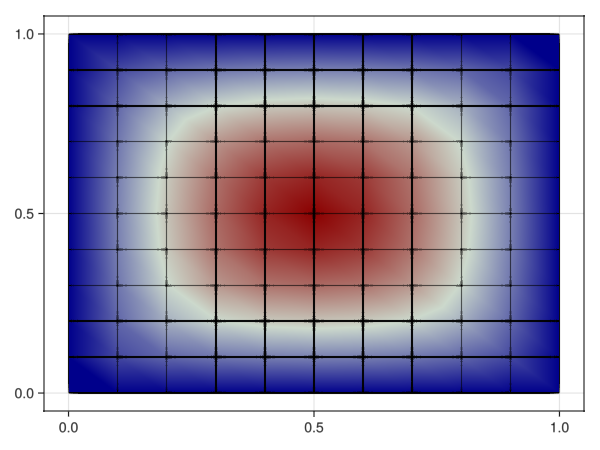
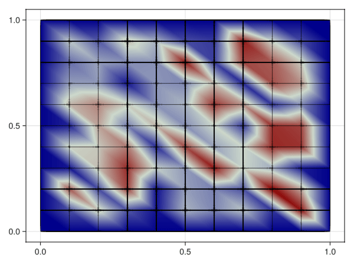

p-Laplacian
Problem statement
Solve the following p-Laplacian equation on the unit square,
\[\left\lbrace \begin{aligned} -\nabla \cdot \left( |\nabla u|^{q-2} \ \nabla u \right) = f\ &\text{in}\ \Omega,\\ u = g \ &\text{on}\ \partial\Omega,\\ \end{aligned} \right.\]
with $f=1$ and $g=0$ and $q=3$.
Solve it with a piece-wise bi-linear Lagrange interpolation, and visualize the result.
Implementation
Load dependencies form Julia stdlib.
using LinearAlgebraImport other dependencies
import GalerkinToolkit as GT
import PartitionedSolvers as PS
import ForwardDiff
import GLMakie as MakieCode
domain = (0,1,0,1)
cells = (10,10)
mesh = GT.cartesian_mesh(domain,cells)
dirichlet_tag = "dirichlet"
GT.label_boundary_faces!(mesh;physical_name=dirichlet_tag)
Ω = GT.interior(mesh)
Γd = GT.boundary(mesh;physical_names=[dirichlet_tag])
k = 1
V = GT.lagrange_space(Ω,k;dirichlet_boundary=Γd)
g = GT.analytical_field(x->0,Ω)
f = GT.analytical_field(x->1,Ω)
const q = 3
flux(∇u) = norm(∇u)^(q-2) * ∇u
dflux(∇du,∇u) = (q-2)*norm(∇u)^(q-4)*(∇u⋅∇du)*∇u+norm(∇u)^(q-2)*∇du
uh = GT.rand_field(Float64,V)
GT.interpolate_dirichlet!(g,uh)
dΩ = GT.measure(Ω,2*k)
∇ = ForwardDiff.gradient
res(u) = v -> GT.∫( x-> ∇(v,x)⋅GT.call(flux,∇(u,x)) - f(x)*v(x) , dΩ)
jac(u) = (du,v) -> GT.∫( x-> ∇(v,x)⋅GT.call(dflux,∇(du,x),∇(u,x)) , dΩ)
p = GT.nonlinear_problem(uh,res,jac)
s = PS.newton_raphson(p,verbose=true)
s = PS.solve(s)
uh = GT.solution_field(uh,s)
Makie.plot(Ω;color=uh,strokecolor=:black) iterations residual solution
current target current target current target
0 1000 1.42e+01 1.00e-08 6.94e-310 0.00e+00
1 1000 3.55e+00 1.00e-08 4.90e-01 0.00e+00
2 1000 8.85e-01 1.00e-08 2.43e-01 0.00e+00
3 1000 2.20e-01 1.00e-08 1.17e-01 0.00e+00
4 1000 5.87e-02 1.00e-08 5.43e-02 0.00e+00
5 1000 1.33e-02 1.00e-08 5.00e-02 0.00e+00
6 1000 1.16e-03 1.00e-08 1.66e-02 0.00e+00
7 1000 3.50e-05 1.00e-08 1.93e-03 0.00e+00
8 1000 3.03e-08 1.00e-08 4.99e-05 0.00e+00
9 1000 2.07e-14 1.00e-08 3.75e-08 0.00e+00
Now, by showing the intermediate results in the iteration process
uh = GT.rand_field(Float64,V)
GT.interpolate_dirichlet!(g,uh)
p = GT.nonlinear_problem(uh,res,jac)
s = PS.newton_raphson(p)
color = Makie.Observable(uh)
fig = Makie.plot(Ω;color,strokecolor=:black)
fn = joinpath(@__DIR__,"fig_pt_plaplacian.gif")
Makie.record(fig,fn,PS.history(s);framerate=2) do s
color[] = GT.solution_field(uh,s)
end
This page was generated using Literate.jl.